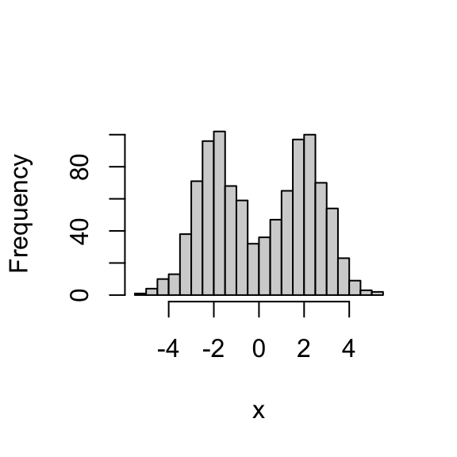
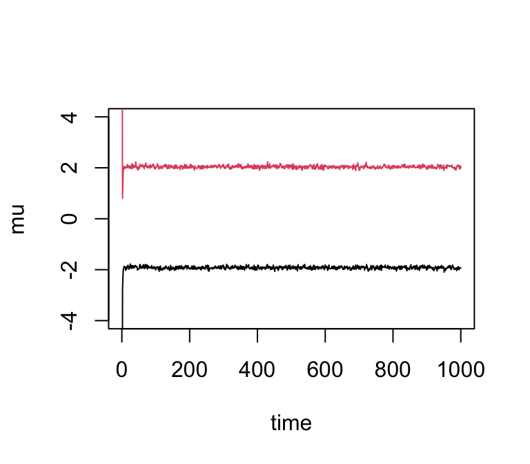
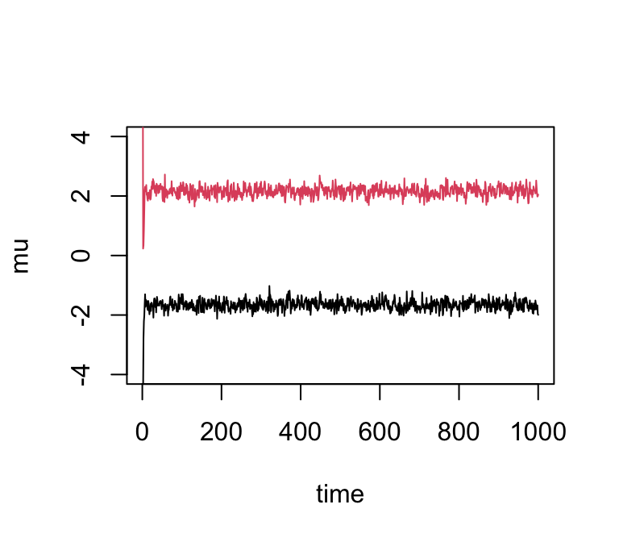
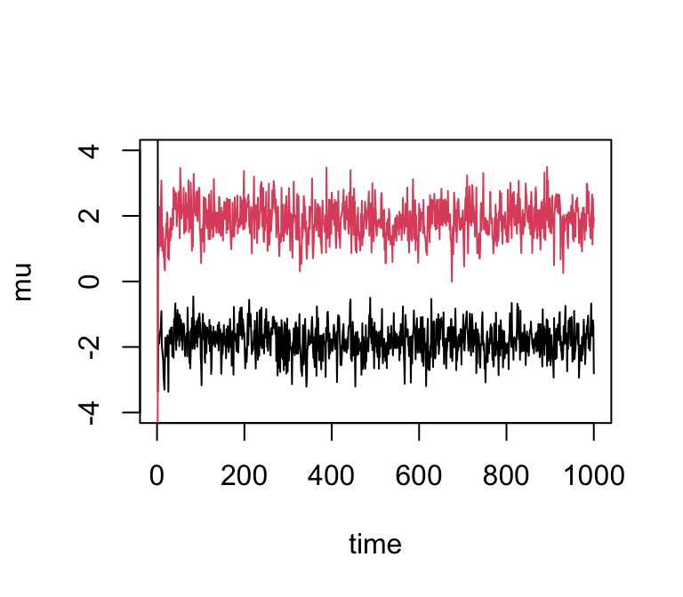

Last updated: 2026-01-23
Checks: 7 0
Knit directory: fiveMinuteStats/analysis/
This reproducible R Markdown analysis was created with workflowr (version 1.7.1). The Checks tab describes the reproducibility checks that were applied when the results were created. The Past versions tab lists the development history.
Great! Since the R Markdown file has been committed to the Git repository, you know the exact version of the code that produced these results.
Great job! The global environment was empty. Objects defined in the global environment can affect the analysis in your R Markdown file in unknown ways. For reproduciblity it’s best to always run the code in an empty environment.
The command set.seed(12345) was run prior to running the
code in the R Markdown file. Setting a seed ensures that any results
that rely on randomness, e.g. subsampling or permutations, are
reproducible.
Great job! Recording the operating system, R version, and package versions is critical for reproducibility.
Nice! There were no cached chunks for this analysis, so you can be confident that you successfully produced the results during this run.
Great job! Using relative paths to the files within your workflowr project makes it easier to run your code on other machines.
Great! You are using Git for version control. Tracking code development and connecting the code version to the results is critical for reproducibility.
The results in this page were generated with repository version dce2fda. See the Past versions tab to see a history of the changes made to the R Markdown and HTML files.
Note that you need to be careful to ensure that all relevant files for
the analysis have been committed to Git prior to generating the results
(you can use wflow_publish or
wflow_git_commit). workflowr only checks the R Markdown
file, but you know if there are other scripts or data files that it
depends on. Below is the status of the Git repository when the results
were generated:
Untracked files:
Untracked: figure/
Untracked: temp.Rmd
Note that any generated files, e.g. HTML, png, CSS, etc., are not included in this status report because it is ok for generated content to have uncommitted changes.
These are the previous versions of the repository in which changes were
made to the R Markdown (analysis/gibbs2.Rmd) and HTML
(docs/gibbs2.html) files. If you’ve configured a remote Git
repository (see ?wflow_git_remote), click on the hyperlinks
in the table below to view the files as they were in that past version.
| File | Version | Author | Date | Message |
|---|---|---|---|---|
| Rmd | d0587d4 | Peter Carbonetto | 2026-01-23 | Updates to the gibbs2 vignette. |
| html | d8466b1 | Matthew Stephens | 2021-02-04 | Build site. |
| Rmd | e8976cf | Matthew Stephens | 2021-02-04 | workflowr::wflow_publish("analysis/gibbs2.Rmd") |
| html | 5f62ee6 | Matthew Stephens | 2019-03-31 | Build site. |
| Rmd | 0cd28bd | Matthew Stephens | 2019-03-31 | workflowr::wflow_publish(all = TRUE) |
| html | 34bcc51 | John Blischak | 2017-03-06 | Build site. |
| Rmd | 5fbc8b5 | John Blischak | 2017-03-06 | Update workflowr project with wflow_update (version 0.4.0). |
| Rmd | 391ba3c | John Blischak | 2017-03-06 | Remove front and end matter of non-standard templates. |
| html | 8e61683 | Marcus Davy | 2017-03-03 | rendered html using wflow_build(all=TRUE) |
| html | c3b365a | John Blischak | 2017-01-02 | Build site. |
| Rmd | 67a8575 | John Blischak | 2017-01-02 | Use external chunk to set knitr chunk options. |
| Rmd | 5ec12c7 | John Blischak | 2017-01-02 | Use session-info chunk. |
| Rmd | a8c9d57 | stephens999 | 2016-09-04 | correct misleading names in gibbs2 example |
| Rmd | 6bb4560 | stephens999 | 2016-05-12 | add gibbs sampling example |
See here for a PDF version of this vignette.
You should know about Gibbs sampling and mixture models, and be familiar with Bayesian inference for the normal mean and for the two class problem.
Load the gtools package, which is needed to sample from a Dirichlet distribution.
library(gtools)We consider using Gibbs sampling to perform inference for a normal mixture model, \[ X_1,\dots,X_n \sim f(x), \] where \[ f(x) = \sum_{k=1}^K \pi_k N(x; \mu_k, 1). \] Here, \(\pi_1, \dots, \pi_K\) are non-negative and sum to 1, and \(N(\,\cdot\,; \mu, \sigma^2)\) denotes the probability density function of the \(N(\mu, \sigma^2)\) distribution.
Recall the latent variable representation of this model: \[ \begin{aligned} \Pr(Z_j = k) &= \pi_k X_j \mid Z_j = k &\sim N(\mu_k, 1). \end{aligned} \]
To illustrate, let’s simulate data from this model:
set.seed(33)
# Simulate from a mixture of normals.
#' @param n Number of samples.
#' @param pi Mixture proportions.
#' @param mu Mixture means.
#' @param s Mixture standard deviations.
rmix <- function (n, pi, mu, s) {
z <- sample(length(pi),prob = pi,size = n,replace = TRUE)
x <- rnorm(n,mu[z],s[z])
return(x)
}
x <- rmix(n = 1000,pi = c(0.5,0.5),mu = c(-2,2),s = c(1,1))
hist(x,breaks = 32,main = "")
Suppose we want to perform inference for the parameters \(\mu, \pi\). That is, we want to sample from the posterior distribution \(p(\mu, \pi \mid x)\). We can use a Gibbs sampler. However, to do this we have to augment the space to sample from \(p(z, \mu, \pi \mid x)\), not only \(p(\mu, \pi \mid x)\).
Here is the algorithm in outline:
Sample \(\mu\) from \(p(\mu \mid x, z, \pi)\).
Sample \(\pi\) from \(p(\pi \mid x, z, \mu)\).
Sample \(z\) from \(p(z \mid x, \pi, \mu)\).
The point here is that all of these conditionals are easy to sample from.
normalize <- function (x)
return(x/sum(x))
#' @param x Data vector (length n).
#' @param pi Vector (length k).
#' @param mu Vector (length k).
sample_z <- function (x, pi, mu) {
dmat <- outer(mu,x,"-") # k x n matrix, d[k,j] = mu[k] - x[j]
p.z.given.x <- as.vector(pi) * dnorm(dmat)
p.z.given.x <- apply(p.z.given.x,2,normalize) # Normalize columns.
z <- rep(0,length(x))
for (i in 1:length(z))
z[i] <- sample(length(pi),size = 1,prob = p.z.given.x[,i],replace = TRUE)
return(z)
}
#' @param z Vector of cluster allocations (length n).
#' @param k The number of clusters.
sample_pi <- function (z, k) {
counts <- colSums(outer(z,1:k,FUN = "=="))
pi <- rdirichlet(1,counts + 1)
return(pi)
}
#' @param x Data vector (length n).
#' @param z Cluster allocations (length n).
#' @param k The number of clusters.
#' @param prior.mean The prior mean for mu.
#' @param prior.prec The prior precision for mu.
sample_mu <- function (x, z, k, prior) {
mu <- rep(0,k)
for (i in 1:k) {
sample.size <- sum(z == i)
sample.mean <- ifelse(sample.size == 0,0,mean(x[z == i]))
post.prec <- sample.size + prior$prec
post.mean <- (prior$mean * prior$prec + sample.mean * sample.size)/post.prec
mu[i] <- rnorm(1,post.mean,sqrt(1/post.prec))
}
return(mu)
}
gibbs <- function (x, k, niter = 1000, muprior = list(mean = 0,prec = 0.1)) {
pi <- rep(1/k,k)
mu <- rnorm(k,0,10)
z <- sample_z(x,pi,mu)
res <- list(mu = matrix(0,niter,k),
pi = matrix(0,niter,k),
z = matrix(0,niter,length(x)))
res$mu[1,] <- mu
res$pi[1,] <- pi
res$z[1,] <- z
for (i in 2:niter) {
pi <- sample_pi(z,k)
mu <- sample_mu(x,z,k,muprior)
z <- sample_z(x,pi,mu)
res$mu[i,] <- mu
res$pi[i,] <- pi
res$z[i,] <- z
}
return(res)
}Try the Gibbs sampler on the data set we simulated above. We see it quickly moves to a part of the space where the mean parameters are near their true values (-2 and 2):
res <- gibbs(x,2)
plot(res$mu[,1],ylim = c(-4,4),type = "l",xlab = "time",ylab = "mu")
lines(res$mu[,2],col = 2)
If we simulate data with fewer observations we should see more uncertainty in the parameters:
x <- rmix(100,c(0.5,0.5),c(-2,2),c(1,1))
res2 <- gibbs(x,2)
plot(res2$mu[,1],ylim = c(-4,4),type = "l",xlab = "time",ylab = "mu")
lines(res2$mu[,2],col = 2)
And with even fewer observations…
x <- rmix(10,c(0.5,0.5),c(-2,2),c(1,1))
res3 <- gibbs(x,2)
plot(res3$mu[,1],ylim = c(-4,4),type = "l",xlab = "time",ylab = "mu")
lines(res3$mu[,2],col = 2)
We can easily obtain credible intervals (CI) from these samples. For example, to get 90% posterior CIs for the mean parameters:
quantile(res3$mu[-(1:10),1],c(0.05,0.95))
# 5% 95%
# -2.644896 -1.004009
quantile(res3$mu[-(1:10),2],c(0.05,0.95))
# 5% 95%
# 0.9400428 2.7773584(Here we discarded the first few samples as “burn-in”.)
sessionInfo()
# R version 4.3.3 (2024-02-29)
# Platform: aarch64-apple-darwin20 (64-bit)
# Running under: macOS 15.7.1
#
# Matrix products: default
# BLAS: /Library/Frameworks/R.framework/Versions/4.3-arm64/Resources/lib/libRblas.0.dylib
# LAPACK: /Library/Frameworks/R.framework/Versions/4.3-arm64/Resources/lib/libRlapack.dylib; LAPACK version 3.11.0
#
# locale:
# [1] en_US.UTF-8/en_US.UTF-8/en_US.UTF-8/C/en_US.UTF-8/en_US.UTF-8
#
# time zone: America/Chicago
# tzcode source: internal
#
# attached base packages:
# [1] stats graphics grDevices utils datasets methods base
#
# other attached packages:
# [1] gtools_3.9.5
#
# loaded via a namespace (and not attached):
# [1] vctrs_0.6.5 cli_3.6.5 knitr_1.50 rlang_1.1.6
# [5] xfun_0.52 stringi_1.8.7 promises_1.3.3 jsonlite_2.0.0
# [9] workflowr_1.7.1 glue_1.8.0 rprojroot_2.0.4 git2r_0.33.0
# [13] htmltools_0.5.8.1 httpuv_1.6.14 sass_0.4.10 rmarkdown_2.29
# [17] evaluate_1.0.4 jquerylib_0.1.4 tibble_3.3.0 fastmap_1.2.0
# [21] yaml_2.3.10 lifecycle_1.0.4 whisker_0.4.1 stringr_1.5.1
# [25] compiler_4.3.3 fs_1.6.6 Rcpp_1.1.0 pkgconfig_2.0.3
# [29] later_1.4.2 digest_0.6.37 R6_2.6.1 pillar_1.11.0
# [33] magrittr_2.0.3 bslib_0.9.0 tools_4.3.3 cachem_1.1.0